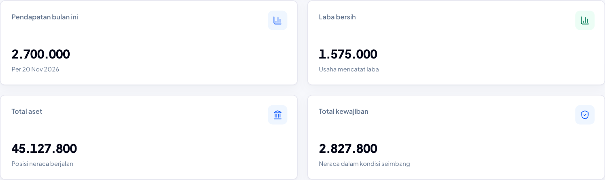
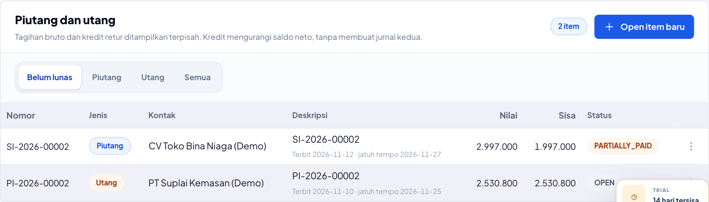
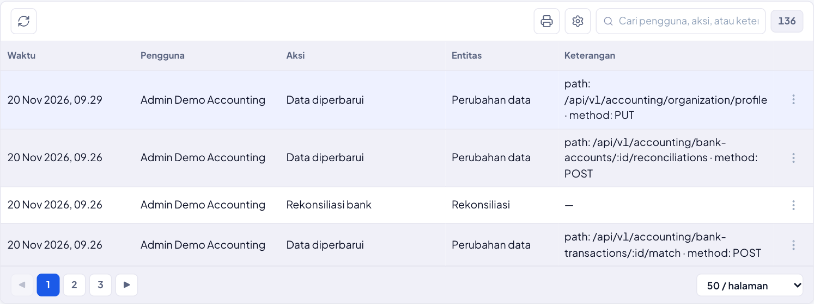

Loka Kasir AccountingPembukuan & laporan keuangan
PILIH PRODUK SESUAI PEKERJAAN
Kenali aplikasi pembukuan dan laporan keuangan.
Loka Kasir Accounting membantu tim mengikuti transaksi dari faktur sampai laporan.

PILIH PRODUK SESUAI PEKERJAAN
Loka Kasir Accounting membantu tim mengikuti transaksi dari faktur sampai laporan.

PILIH PRODUK SESUAI PEKERJAAN
Catat penjualan di meja kasir, kelola shift, dan cetak struk.
Buat faktur, kelola utang-piutang, dan baca jurnal serta laporan keuangan.
Gunakan Accounting secara mandiri atau hubungkan dengan Loka Kasir.
Siapkan data perusahaan dan saldo awal. Catat satu faktur penjualan, lalu buka jurnal transaksi dan lihat pengaruhnya pada laporan.
Buka Loka Kasir Accounting →
FAKTUR DAN PIUTANG
Cek saldo faktur setelah pelanggan membayar sebagian.

FAKTUR DAN PIUTANG
Total faktur penjualan yang ditagihkan.
Pembayaran pelanggan yang sudah dicatat.
Piutang tersisa. Status faktur masih dibayar sebagian.
Pilih tagihan di Penerimaan Pembayaran dan buka Riwayat pelunasan. Jika ada salah nominal, pembatalan membentuk jurnal pembalik dan memulihkan saldo tagihan.
Buka Loka Kasir Accounting →
PEMBELIAN DAN UTANG
Ikuti jalur pesanan, penerimaan barang, dan faktur pembelian.

PEMBELIAN DAN UTANG
Catat 120 unit × Rp95.000 sebelum barang dikirim.
Konfirmasi 120 unit fisik masuk ke gudang.
Tautkan faktur sebesar Rp12.654.000 termasuk PPN ke dokumen penerimaan.
Dalam contoh demo, uang muka Rp2.000.000 mengurangi tagihan. Sisa Rp10.654.000 dibukukan melalui Perintah Pembayaran.
Buka Loka Kasir Accounting →
KAS DAN BANK
Mulai dengan mencocokkan mutasi bank dan jurnal.

KAS DAN BANK
Saldo akhir pada contoh rekening koran.
Saldo akun Bank di buku besar untuk tanggal yang sama.
Selisih saldo setelah mutasi dicocokkan.
Impor CSV mutasi. Pilih baris yang sesuai dengan jurnal berdasarkan tanggal, nominal, dan referensi. Tinjau saldo akhir sebelum menyelesaikan rekonsiliasi.
Buka Loka Kasir Accounting →
PERSEDIAAN PER GUDANG
Cek stok tersedia di setiap lokasi sebelum membuat pesanan.

PERSEDIAAN PER GUDANG
Stok tersedia di Gudang Bekasi pada contoh demo.
Batas minimum yang diatur untuk SKU tersebut di Bekasi.
Selisih terhadap minimum. Periksa stok Jakarta untuk kemungkinan transfer.
Tinjau Barang Stok Minimum. Gunakan Permintaan Barang untuk kebutuhan internal atau buat permintaan pembelian saat perlu restok.
Buka Loka Kasir Accounting →
KARTU ASET TETAP
Lihat harga perolehan dan penyusutan di kartu aset.

KARTU ASET TETAP
Harga perolehan rak. Contoh ini memakai residu Rp0.
Penyusutan garis lurus untuk umur manfaat 48 bulan.
Nilai buku contoh setelah satu bulan penyusutan penuh.
Lengkapi harga perolehan, residu, dan umur manfaat. Catat penyusutan periode tersebut. Bila rak berpindah lokasi, simpan riwayatnya di Pindah Aset.
Buka Loka Kasir Accounting →
E-FAKTUR CORETAX
Periksa faktur keluaran sebelum menyiapkan berkas.

E-FAKTUR CORETAX
Cek profil pajak perusahaan dan pembeli pada dokumen.
Pilih faktur penjualan yang sudah diposting.
Tinjau angka yang tercatat sebelum ekspor XML.
Ekspor XML dari e-Faktur Coretax. Setelah berkas diproses di Coretax, simpan nomor faktur yang terbit di Accounting.
Buka Loka Kasir Accounting →
TUTUP BUKU BULANAN
Tinjau saldo dan dokumen yang belum selesai.

TUTUP BUKU BULANAN
Cocokkan saldo buku besar dengan rekening koran.
Tinjau faktur terbuka dan pembayaran yang belum tercatat.
Periksa stok opname dan penyusutan yang perlu diposting.
Buka neraca saldo, laba rugi, dan neraca. Di akun demo, Oktober sudah dikunci setelah pemeriksaan. November masih terbuka untuk pembukuan berjalan.
Buka Loka Kasir Accounting →
ANGGARAN DAN REALISASI
Bandingkan rencana dengan biaya yang sudah masuk buku besar.

ANGGARAN DAN REALISASI
Anggaran akun biaya logistik untuk Oktober.
Realisasi biaya di buku besar pada periode yang sama.
Selisih. Realisasi mencapai 75% dari anggaran.
Buka Anggaran, pilih rencana yang ingin ditinjau, lalu klik Lihat realisasi. Gunakan periode yang sama untuk membaca anggaran dan biaya aktual.
Buka Loka Kasir Accounting →
LOG AKTIVITAS PEMBUKUAN
Gunakan Log aktivitas untuk menelusuri perubahan.

LOG AKTIVITAS PEMBUKUAN
Lihat kapan tindakan dicatat sistem.
Periksa siapa yang tercantum pada aktivitas tersebut.
Buka jenis tindakan dan keterangan perubahan yang tersimpan.
Cari pengguna, aksi, atau keterangan di Log aktivitas. Saat meninjau koreksi pembayaran, cocokkan catatan aktivitas dengan Riwayat pelunasan tagihan.
Buka Loka Kasir Accounting →